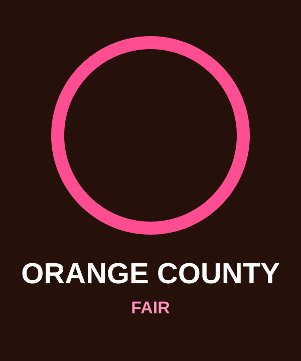
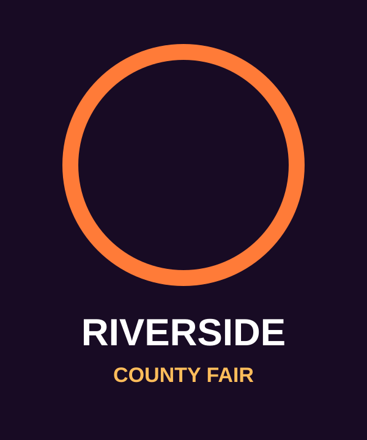

Since 2011
San Diego County Fair
The original home of OATF. History, community and future official updates live here.

Out at the Fair locations
Explore the places connected to the Out at the Fair story. Official 2027 information appears only when it has been announced.
2027 landing pages
The original home of OATF. History, community and future official updates live here.

Community, family-friendly entertainment history and future official updates.

A prospective conversation only. No 2027 event or official fair partnership has been announced.